7 应用案例
ollama的远程模型有时候可能用不了，所以使用模型的时候，可以将远程模型替换成：
deepseek-r1:1.5b 、llama3.2:1b 、qwen2.5:0.5b 、qwen2.5:1.5b 这些都是很小的模型，本地跑起来不算卡。
embedding模型可以用：nomic-embed-text:latest 、bge-m3:latest
自动补全使用的模型可以是：qwen2.5-coder:7b（4.7 GB）
创建python虚拟环境的时候，可以选择使用uv 包来创建，非常好用，个人感觉比conda、venv好用很多。
在附录部分，会列出uv的用法。
7.1 搭建本地的 AI Copilot 编程助手
7.1.1 AI 编程介绍
7.1.1.1 为什么我们要使用 AI 编程？
大语言模型问世已久，但是其表现最出色的领域一直是编程领域，原因如下：
- 明确的对错标准。在编程世界里, 代码要么能跑, 要么不能。这种非黑即白的特性让 AI 更容易判断自己的输出质量。
- 精确的语言。编程语言没有太多模棱两可的地方。每个符号、每个关键字都有明确的含义。这种精确性正是 AI 模型所擅长的。
- 目标明确的任务。写代码时, 我们通常有明确的目标。比如, “写一个计算斐波那契数列的函数”。这种清晰的指令让 AI 更容易集中精力解决问题。
- 知识的通用性。学会了一种编程语言的基本概念, 很多东西都能迁移到其他语言。这种知识的可迁移性让 AI 模型在编程领域学习效率特别高。
7.1.1.2 我们如何使用 AI 编程？
- 使用大模型对话应用（这里不再讲解）
- 使用集成开发环境（IDE）
- Continue
- 使用命令行工具
- Aider
7.1.2 集成开发环境 Continue 接入
本地模型代码补全
cursor虽然提供了一些免费模型的使用，但是没有提供免费的代码补全，所以可以使用本地模型来进行代码补全。
7.1.2.1 安装所需模型
- 安装 Ollama
- 安装以下模型
- 安装通用问答模型
ollama pull llama3:8b - 安装自动代码补全模型:
ollama pull starcoder2:3b（也可以用qwen2.5-coder:7b,4GB） - 安装 embedding 模型:
ollama pull nomic-embed-text
- 安装通用问答模型
7.1.2.2 打开cursor
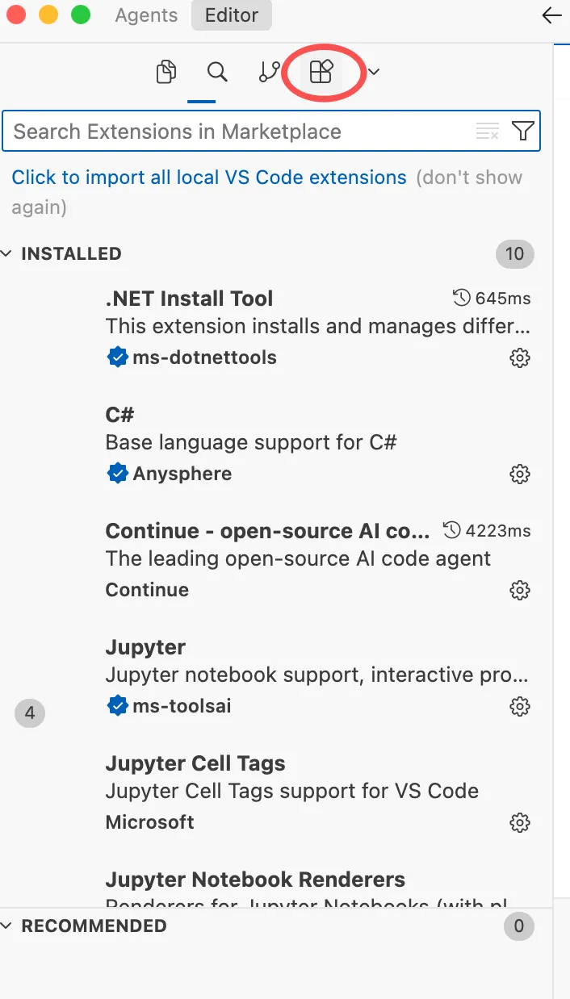
在插件搜索栏搜索Continue.
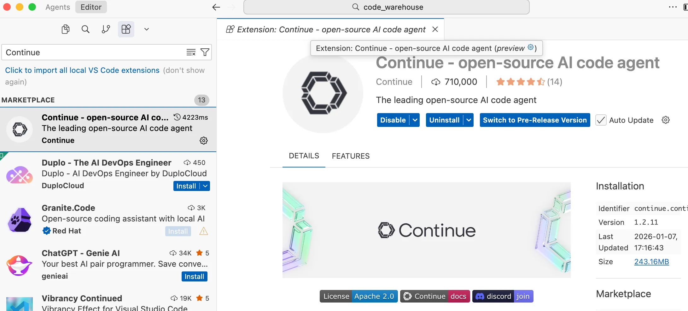
下载Continue
7.1.2.3 配置模型
在左边文件夹区域
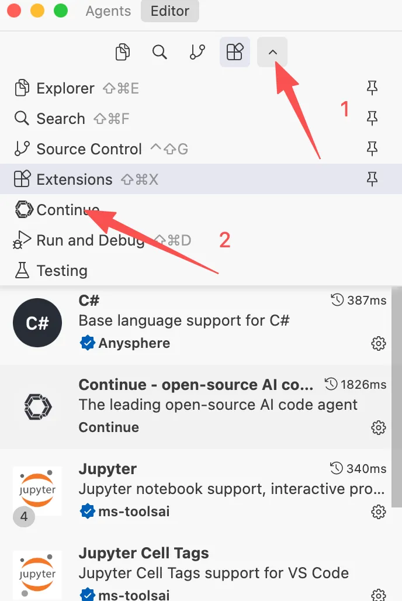
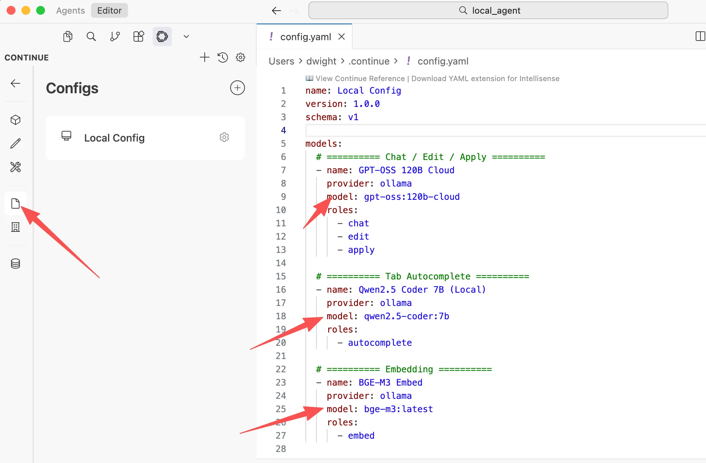
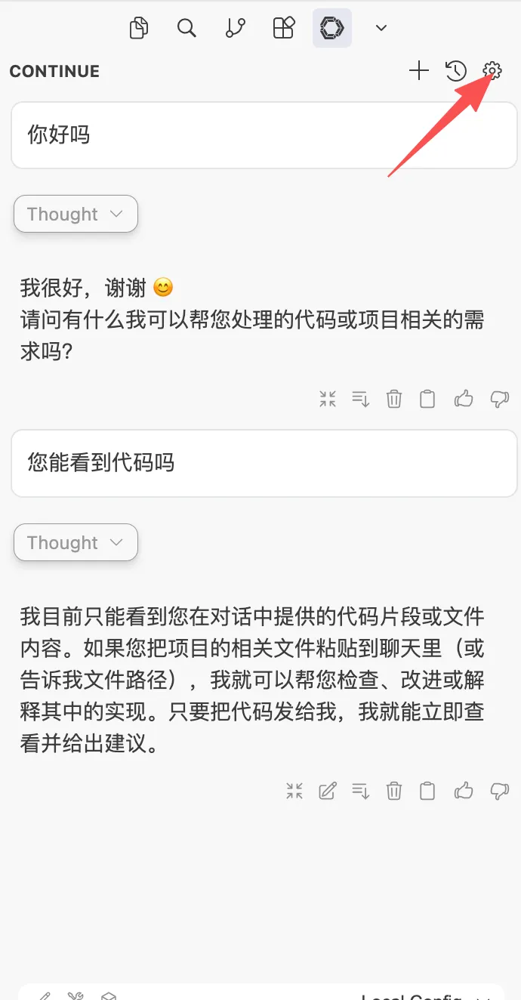
把指定的模型替换成ollama本地有的，且合适的模型就可以补全了。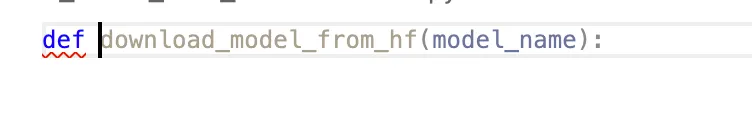
或者也可以从右下角来选中Continue。
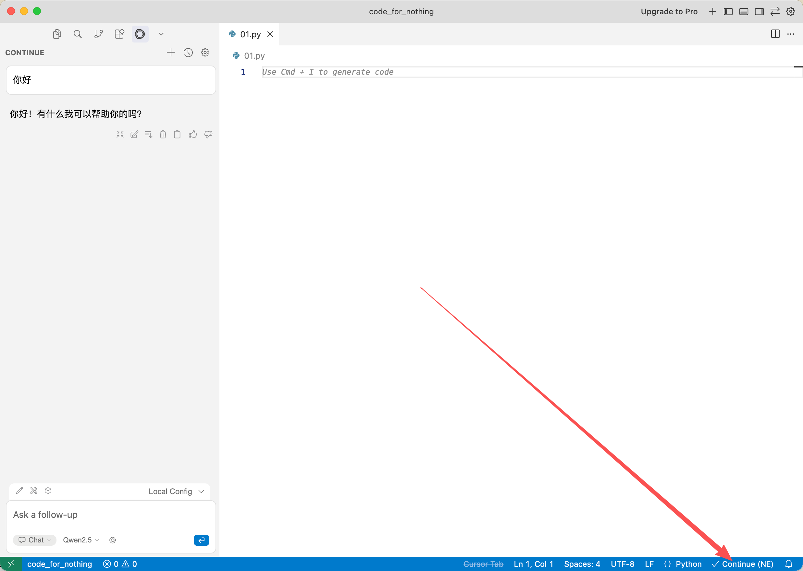
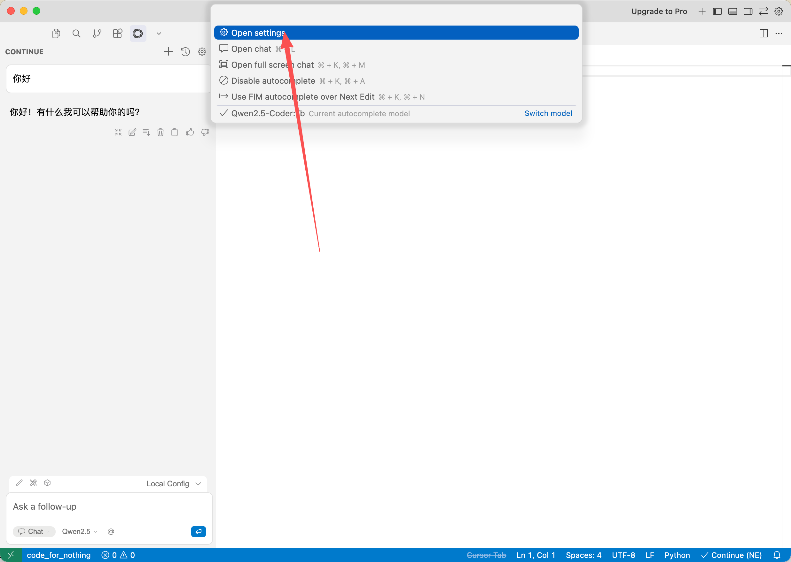
然后同样会进入设置界面，配置文件其实不需要自己来写，参考：
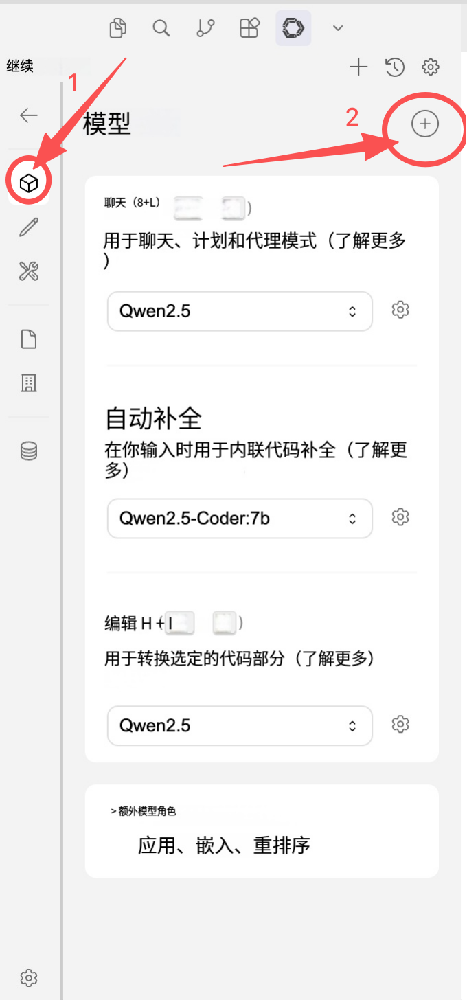
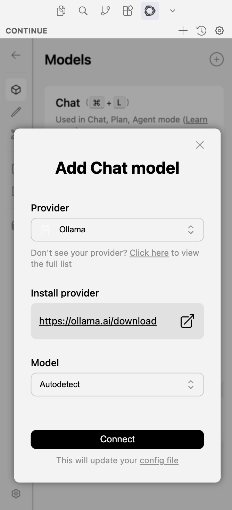
通过上述这些步骤就可以连接到本地的ollama，然后选择本地下载好的模型，它会自动生成config文件，之后可以以次config文件内容为模版，修改为本地有的模型。
7.1.3 命令行环境 Aider 接入
Aider 是基于命令行的编程助手，比起集成开发环境，它拥有顶级的系统权限和功能使用，但同时意味着它更难上手。
以下教程将教会你安装 Aider 以及连接到 Ollama 服务
此外，请确保：
- 安装了 git 并且有 git 使用经验
- python 使用经验
7.1.3.1 安装 Aider
- Aider 的使用过程中对 python 环境有大量依赖，建议使用 conda 新开一个环境或者使用 python 新建虚拟环境，以下使用 conda 演示
新起一个 conda 虚拟环境（python 虚拟环境同理）
conda create -n aider_env python=3.9进入该虚拟环境
conda activate aider_env按照以下命令安装
python -m pip install aider-chatpython -m pip 的意思不是“用 pip 这个命令”，而是“让当前这个 python 解释器，去运行它自带环境里的 pip 模块”。-m 的含义是 run module，也就是把一个 Python 模块当成入口程序来执行。换句话说，这条命令的主语是 python，而不是 pip。
关键差异就在这里。pip install 的本质是调用一个叫 pip 的可执行脚本，而这个 pip 脚本到底对应哪一个 Python，是不确定的，它取决于你的 PATH、conda 环境、venv 状态，甚至取决于你之前装过什么。你敲 pip install 的时候，实际上是在赌“这个 pip 恰好属于我现在想用的那个 Python”。
而 python -m pip install 的语义是完全确定的：我明确指定了 python，用的就是当前这个 python，然后让它加载它自己那一套 pip，再往它自己的 site-packages 里装东西。也就是说，python 和 pip 在逻辑上是强绑定的，不存在装到“隔壁 Python”里的问题。
python -m pip 本质上是一个“防歧义写法”。它牺牲了一点点输入长度，换来的是环境确定性和可复现性。
7.1.3.2 设置 Ollama 并启动
1.启动命令行，按照如下设置环境变量
export OLLAMA_API_BASE=http://127.0.0.1:11434 # Mac/Linux环境
setx OLLAMA_API_BASE http://127.0.0.1:11434 # Windows环境,设置以后重启shell工具2.cd 进入自己本地的代码仓库位置，若没有，Aider 会自动在当前目录下初始化 git 仓库
#example
cd D:\Myfile\handy-ollama\handy-ollama\handy-ollama3.使用以下命令运行 Aider
aider --model ollama/<你的模型名字>
#example
#aider --model ollama/llama3.2:3b
#aider --model ollama/gpt-oss:120b-cloud 使用云上模型会报错命令输入后出现一些选择，如下：
..../miniconda3/envs/aider_env/bin/python -m pip install --upgrade --upgrade-strategy only-if-needed aider-chat
Run pip install? (Y)es/(N)o [Yes]: y
...
Installation complete.
Re-run aider to use new version.
No git repo found, create one to track aider's changes (recommended)? (Y)es/(N)o [Yes]: y
Open documentation url for more info? (Y)es/(N)o/(D)on't ask again [Yes]: n你也可以使用 .env 文件配置 Aider 相关信息
比如
## 指定OPENAI_KEY(如果有的话)
OPENAI_API_KEY=xxx
## 指定你使用model
AIDER_MODEL=ollama/llama3:8b更多配置参考：https://aider.chat/docs/config/dotenv.html
4.进入以下页面即成功
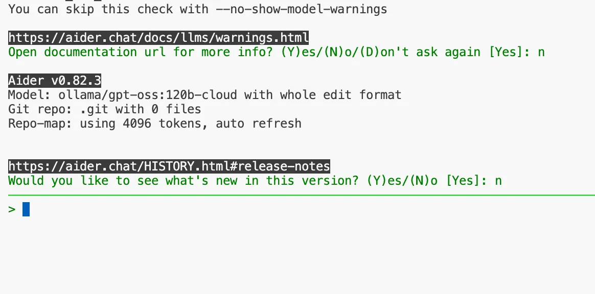
5.你现在可以跟他聊天，或者给他发送一些指令，它可以直接修改你的代码
电脑配置太低的话，会卡住。
7.1.3.3 基本使用
- 你可以问它一些关于这个仓库的基本信息

2.Add Files 添加文件
/add <file1> <file2> ...然后你就可以根据这些文件来做一些提问
- 你可以在不添加任何文件的情况下使用 Aider，它会根据您的请求尝试找出需要编辑哪些文件。(但是想过往往不好)
- 添加相关的文件以对某个特定的代码或者文件进行修改或者答疑。（不要添加一堆额外的文件。如果添加太多文件，生成效果也不好，并且需要花费更多 Token ）。示例：


- 使用 Aider 直接对代码文件或者其他文件进行修改，比如对 Readme最后一行加一个总结

查看实际文件

- 如果不希望 Aider 对文件进行实际操作，可以在对话前添加操作符 /ask
- 使用 /drop 删除所有添加入的文件
7.1.3.4 参考资料
常用斜杠命令列表：
| 命令 | 描述 |
|---|---|
/add |
将文件添加到聊天中，以便 GPT 可以编辑或详细审查它们 |
/ask |
询问关于代码库的问题，而不编辑任何文件 |
/chat-mode |
切换到新的聊天模式 |
/clear |
清除聊天历史 |
/clipboard |
将剪贴板中的图像/文本添加到聊天中（可选择为图像提供名称） |
/code |
请求对代码进行更改 |
/commit |
提交在聊天外对仓库所做的编辑（提交信息可选） |
/diff |
显示自上次消息以来的更改差异 |
/drop |
从聊天会话中移除文件以释放上下文空间 |
/exit |
退出应用程序 |
/git |
运行 git 命令 |
/help |
询问关于 aider 的问题 |
/lint |
对提供的文件或聊天中的文件进行代码检查和修复（如果未提供文件） |
/ls |
列出所有已知文件，并指示哪些文件包含在聊天会话中 |
/map |
打印当前仓库信息 |
/map-refresh |
强制刷新仓库信息并打印出来 |
/model |
切换到新的语言模型 |
/models |
搜索可用模型列表 |
/quit |
退出应用程序 |
/read-only |
将文件添加到聊天中，仅供参考，不可编辑 |
/run |
运行 shell 命令，并可选择将输出添加到聊天中（别名：!） |
/test |
运行 shell 命令，并在非零退出代码时将输出添加到聊天中 |
/tokens |
报告当前聊天上下文使用的令牌数量 |
/undo |
如果最后一次 git 提交是由 aider 完成的，则撤销该提交 |
/voice |
录制并转录语音输入 |
/web |
抓取网页，转换为 markdown 并添加到聊天中 |
7.1.4 集成开发环境 RooCline 接入（新）
7.1.4.1 Cline 和 RooCline
Cline是目前世界范围内最火热的 vscode 的 ai 编程插件。它对人工智能辅助的运用方式与市场上大多数工具不同。它并非仅仅专注于代码生成或补全，而是作为一种系统级工具运行，能够与整个开发环境进行交互。在处理复杂的调试场景、大规模重构或集成测试时，这一特性就显得尤为重要，具体我们可以看参考资料中的Cline部分。今天我们要介绍的是 Roo Cline。
RooCline 是 Cline 的增强版，专注于提升开发效率和灵活性。它支持多语言、多模型（如 Gemini、Meta 等），并提供了智能通知、文件处理优化、缺失代码检测等功能。此外，RooCline 还支持与 Cline 并行运行，适合需要同时处理多种任务的开发者。
虽然 Roo Cline 的量级仍然不及 Cline，但增速很快。它在 Cline 的基础上，加了一些额外的实验功能，还能自我编写部分代码，只需要人类做少量干预。
并且 Cline 消耗的 Token 数量很高，这或多或少影响了日常开发成本。

7.1.4.2 在 VScode 安装 RooCline 以及配置本地 Ollama
Ollama 安装模型（以 deepseek-r1:1.5b 为例）
- ollama run deepseek-r1:1.5b
- 在 VScode 插件库安装模型
搜索 Roo Cline ，看到如下的图标，点击 install 或者安装
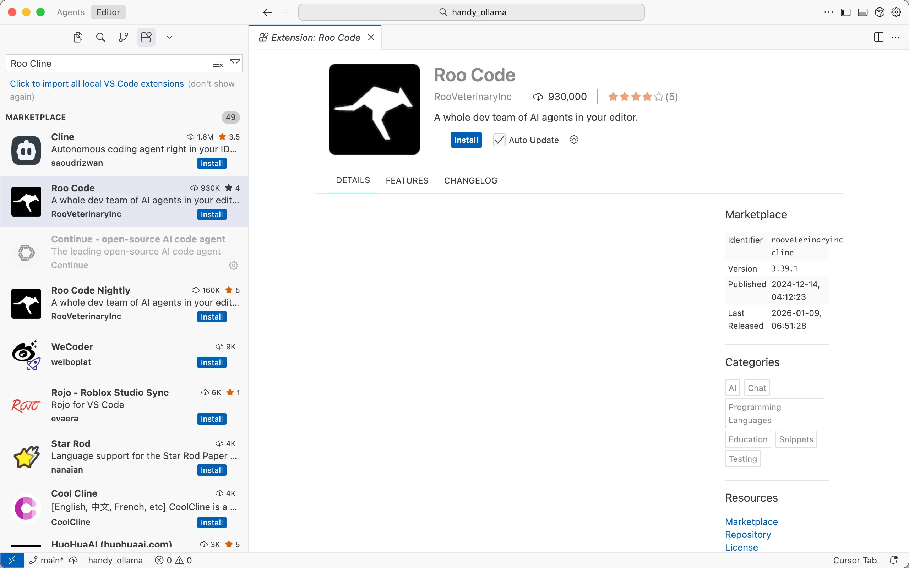
- 配置 ollama
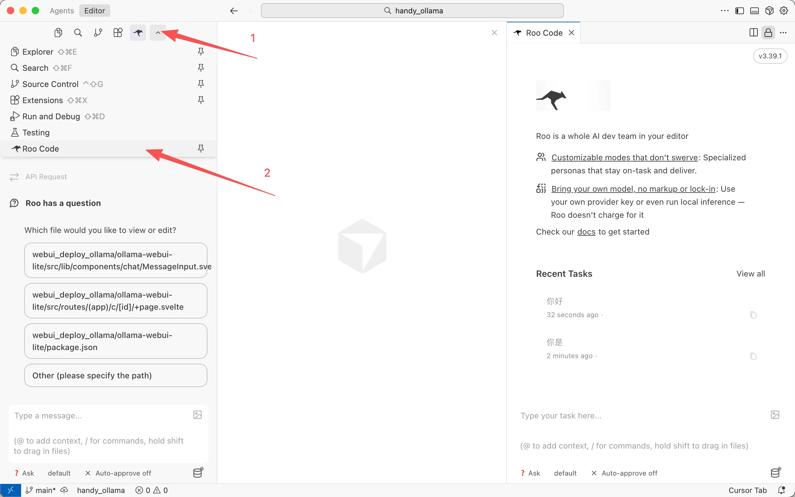
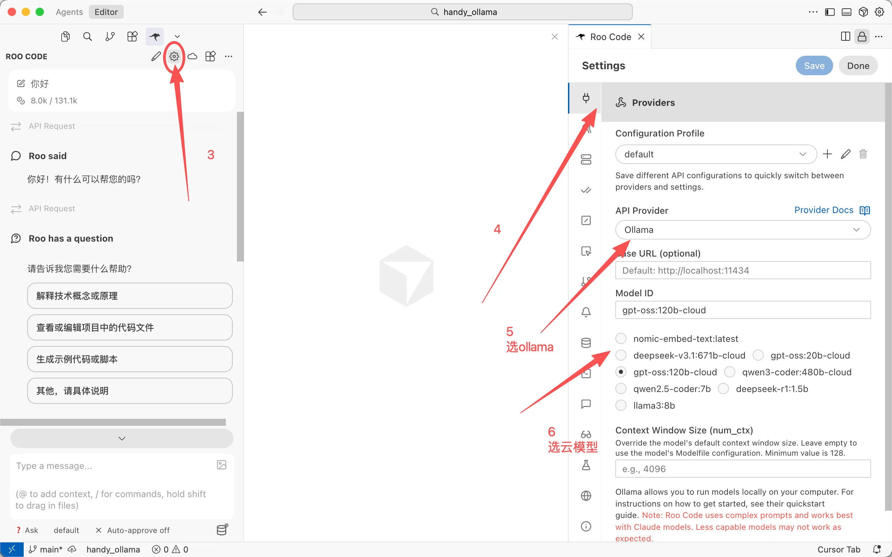
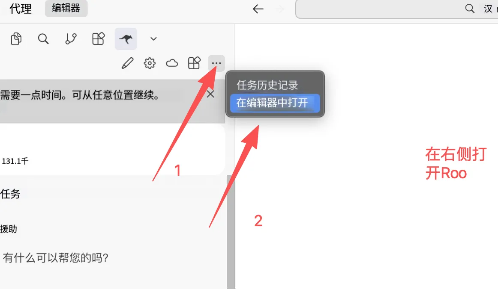
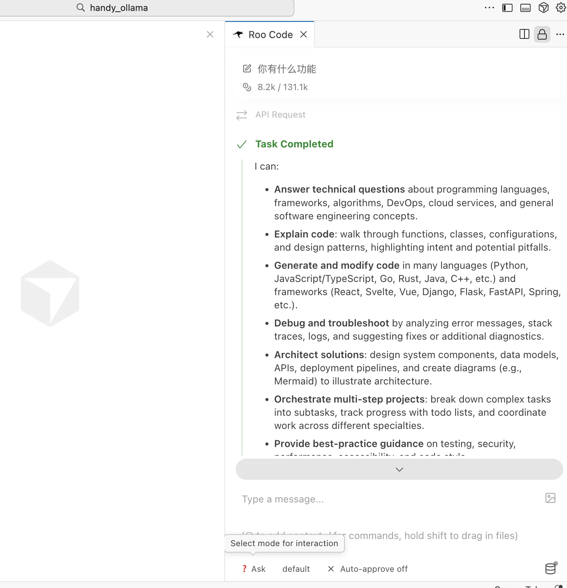
- 现在，你可以像使用其他任何集成编辑器+ ai 一样使用 cursor（vscode）

接下来，我们会介绍一些 Roo cline 独有的功能！
7.1.4.3 Roo Cline 特性
注意，这些特性需要依赖一定的大模型能力，特别是在控制系统级别应用的时候。我们举例中的 deepseek-r1:1.5b 不具备以下这些操作的能力，会报错复杂度太高。建议接入 deepseek 的 api 访问（很便宜）。
以下1~2功能点击功能区域的 Prompt 图标即可进入配置页面

- 支持任意 API/模型
- OpenRouter/Anthropic/Glama/OpenAI/Google Gemini/AWS Bedrock/Azure/GCP Vertex
- 本地模型（LM Studio/Ollama）及任何 OpenAI 兼容接口
- 不同模式可使用不同模型（如架构设计用高级模型，日常编码用经济模型）
- 会话级使用量追踪（Token 消耗和成本统计）
- 自定义模式：通过模式定制 Roo Code 的角色、指令和权限：
- 内置模式
- Code模式：默认多功能编码助手
- Architect模式：系统级设计和架构分析
- Ask模式：深度研究及问题解答
- 用户创建模式
- 输入”Create a new mode for “即可生成定制角色
- 每个模式可拥有独立指令和技能集（在 Prompts 标签管理）
- 高级功能
- 文件类型限制（如 ask/architect 模式仅编辑 markdown）
- 自定义文件规则（如仅操作 .test.ts 测试文件）
- 模式间切换（如自动转代码模式实现具体功能）
- 自主创建新模式（含角色定义和文件限制）
- 内置模式
- 颗粒度控制 Roo cline 权限
点击设置界面进入：可以在 Auto-Approve Setting 控制 Roo cline 的权限.
注意，这里控制的是哪些操作可以不经过你的同意自动进行。否则将会在进行前对你进行一次点击确认过程

- 文件与编辑器操作
- 项目文件创建/编辑（显示差异对比）
- 自动响应代码错误（缺失导入、语法问题等）
- 通过编辑器时间轴追踪变更（便于审查/回滚）
- 命令行集成
- 包管理/构建/测试命令
- 监控输出并自动适配错误
- 后台持续运行开发服务器 支持审批策略：逐条确认/常规操作自动批准
- 浏览器自动化
在第三步中，选择以下选项即可让 Roo Cline拥有网页自动化能力

- 启动本地/远程 Web 应用
- 点击/输入/滚动/截图操作
- 收集控制台日志调试运行时问题 适用于端到端测试和视觉验证- MCP 工具扩展
Model Context Protocol (MCP) 是 Roo 的能力扩展协议，允许 Roo 与本地服务器通信，这些服务器提供额外的工具和资源。相当于给这个编程助手装上了”外接大脑”。
本地/云端双模式：既可以用你电脑本地的工具服务，也能连社区共享的现成模块
动态创建工具：直接告诉 Roo “做个能查最新 npm 文档的工具”，它会自动生成对接代码
举例：
1. 接社区资源：用别人造好的轮子比如接入已存在的「天气 API 查询工具」
直接使用开源社区验证过的工具
2. 自建私藏工具：根据业务需求定制说”做个能抓取公司内部日志的工具”
Roo 会自动生成：
# 示例自动生成的工具框架
class LogTool(MCPPlugin):
def fetch_logs(self, service_name):
# 自动对接公司日志系统
# 返回最近1小时的关键错误日志
...你审核通过后，这个工具就会出现在 Roo 的技能列表里
3. 安全机制：所有新增工具需要人工审核授权才会激活，防止随意调用敏感接口
- 上下文@：提供额外上下文的方式：
@file：嵌入文件内容@folder：包含完整目录结构@problems：引入工作区错误/警告@url：获取 URL 文档（转 markdown）@git：提供 Git 提交记录/差异分析 帮助聚焦关键信息，优化 token 使用
参考资料（推荐阅读）
Roo Cline github地址：https://github.com/RooVetGit/Roo-Code现已改名叫 Roo-Code，更多新功能等你去发现
Cline 介绍：https://zhuanlan.zhihu.com/p/21779725904
Cline 和 Cursor 对比：https://aicoding.csdn.net/679052f1911edf5f3b049d25.html
使用 ai 编程工具从零不写一行代码完成一个AI服务网站：https://cloud.tencent.com/developer/article/2479975
7.2 使用 LangChain 构建本地 RAG 应用
该教程假设您已经熟悉以下概念:
很多流行的项目如 llama.cpp, Ollama, 和 llamafile 显示了本地环境中运行大语言模型的重要性。
LangChain 与许多可以本地运行的 开源 LLM 供应商 有集成，Ollama 便是其中之一。
7.2.1 环境设置
首先，我们需要进行环境设置。
Ollama 的 GitHub仓库 中提供了详细的说明, 简单总结如下:
- 下载 并运行 Ollama 应用程序
- 从命令行, 参考 Ollama 模型列表 和 文本嵌入模型列表 拉取模型。在该教程中，我们以
llama3.1:8b和nomic-embed-text为例:- 命令行输入
ollama pull llama3.1:8b，拉取通用的开源大语言模型llama3.1:8b - 命令行输入
ollama pull nomic-embed-text拉取 文本嵌入模型nomic-embed-text
- 命令行输入
- 当应用运行时，所有模型将自动在
localhost:11434上启动 - 注意，你的模型选择需要考虑你的本地硬件能力，该教程的参考显存大小
GPU Memory > 8GB
接下来，安装本地嵌入、向量存储和模型推理所需的包。
# langchain_community
%pip install -qU langchain langchain_community
# Chroma
%pip install -qU langchain_chroma
# Ollama
%pip install -qU langchain_ollamaNote: you may need to restart the kernel to use updated packages.
Note: you may need to restart the kernel to use updated packages.
Note: you may need to restart the kernel to use updated packages.You can also see this page for a full list of available embeddings models
7.2.2 文档加载
现在让我们加载并分割一个示例文档。
我们将以 Lilian Weng 的关于 Agent 的 博客 为例。
from langchain_text_splitters import RecursiveCharacterTextSplitter
from langchain_community.document_loaders import WebBaseLoader
loader = WebBaseLoader("https://lilianweng.github.io/posts/2023-06-23-agent/")
data = loader.load()
text_splitter = RecursiveCharacterTextSplitter(chunk_size=500, chunk_overlap=0)
all_splits = text_splitter.split_documents(data)接着，初始化向量存储。 我们使用的文本嵌入模型是 nomic-embed-text 。
from langchain_chroma import Chroma
from langchain_ollama import OllamaEmbeddings
local_embeddings = OllamaEmbeddings(model="nomic-embed-text:latest")
vectorstore = Chroma.from_documents(documents=all_splits, embedding=local_embeddings)现在我们得到了一个本地的向量数据库! 来简单测试一下相似度检索:
question = "What are the approaches to Task Decomposition?"
docs = vectorstore.similarity_search(question)
len(docs)4docs[0]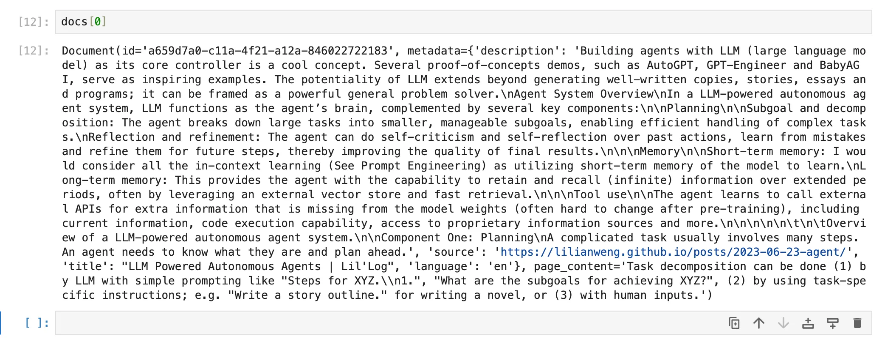
接下来实例化大语言模型 gpt-oss:120b-cloud 并测试模型推理是否正常：
from langchain_ollama import ChatOllama
model = ChatOllama(
model="gpt-oss:120b-cloud",
)本地模型太慢了，所以用ollama提供的云模型，如果电脑配置够快，可以选择llama3.1:8b、deepseek-r1:1.5b
response_message = model.invoke(
"Simulate a rap battle between Stephen Colbert and John Oliver"
)
print(response_message.content)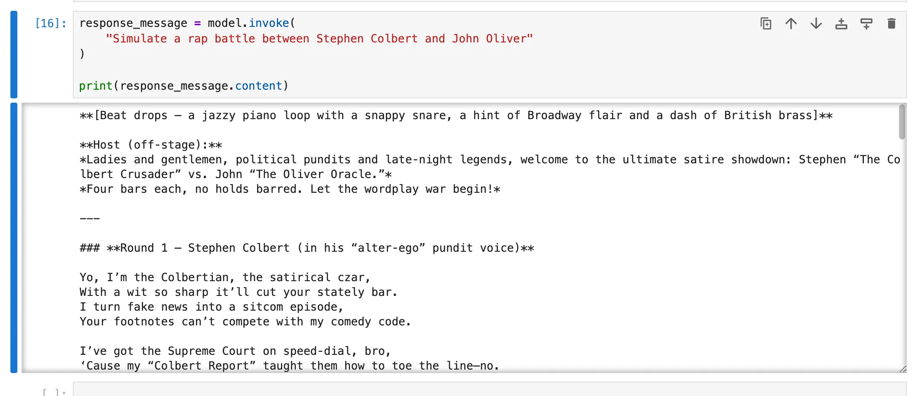
7.2.3 构建 Chain 表达形式
我们可以通过传入检索到的文档和简单的 prompt 来构建一个 summarization chain 。
它使用提供的输入键值格式化提示模板，并将格式化后的字符串传递给指定的模型：
from langchain_core.output_parsers import StrOutputParser
from langchain_core.prompts import ChatPromptTemplate
prompt = ChatPromptTemplate.from_template(
"Summarize the main themes in these retrieved docs: {docs}"
)
# 将传入的文档转换成字符串的形式
def format_docs(docs):
return "\n\n".join(doc.page_content for doc in docs)
chain = {"docs": format_docs} | prompt | model | StrOutputParser()
question = "What are the approaches to Task Decomposition?"
docs = vectorstore.similarity_search(question)
chain.invoke(docs)'**Main Themes**\n\n1. **Task Decomposition Strategies** \n - **LLM‑driven prompting** – simple cues such as “Steps for\u202fXYZ.\u202f1.” or “What are the subgoals for achieving\u202fXYZ?” let a language model generate a step‑by‑step plan. \n - **Task‑specific instructions** – giving a concrete directive (“Write a story outline.”) steers the model toward an appropriate hierarchical breakdown (chapters, scenes, etc.). \n - **Human input** – users can supply or validate subgoals, providing guidance that the model may not infer on its own.\n\n2. **Planning as a Core Component** \n - Complex tasks consist of many interrelated steps; an agent must first **recognize** these steps and **plan** how to sequence them before execution. \n - Planning is framed as the first stage of a three‑stage pipeline: *Planning → Execution → Reflection*.\n\n3. **Subgoal Generation & Decomposition** \n - The agent repeatedly splits a large goal into smaller, tractable subgoals, enabling parallel or incremental processing and reducing cognitive load. \n - Each subgoal becomes a unit of work for downstream “expert” models.\n\n4. **Expert Model Execution** \n - Specialized models (or “expert” modules) are invoked to carry out the concrete subtasks (e.g., code synthesis, summarization, image generation). \n - Results are logged for later review.\n\n5. **Reflection, Self‑Criticism, and Refinement** \n - After execution, the agent performs **self‑reflection**: checking outcomes against expectations, identifying mistakes, and adjusting future steps. \n - This iterative loop improves the quality of the final result and helps the system learn from its own errors.\n\n6. **Memory / State Management** \n - A persistent memory stores the plan, subgoals, intermediate results, and reflection notes, so the agent can recall prior decisions, avoid redundant work, and maintain continuity across long‑running or multi‑turn tasks.\n\n**Overall Picture** \nThe documents describe a hierarchical, iterative workflow for intelligent agents:\n\n1. **Plan** – decompose the objective using LLM prompting, task‑specific cues, or human guidance. \n2. **Execute** – delegate each subgoal to expert models and record outcomes. \n3. **Reflect** – evaluate performance, self‑criticize, and refine the plan. \n\nMemory ties the three stages together, enabling the agent to build on past experience and progressively improve its problem‑solving capability.'7.2.4 简单QA
from langchain_core.runnables import RunnablePassthrough
RAG_TEMPLATE = """
You are an assistant for question-answering tasks. Use the following pieces of retrieved context to answer the question. If you don't know the answer, just say that you don't know. Use three sentences maximum and keep the answer concise.
<context>
{context}
</context>
Answer the following question:
{question}"""
rag_prompt = ChatPromptTemplate.from_template(RAG_TEMPLATE)
chain = (
RunnablePassthrough.assign(context=lambda input: format_docs(input["context"]))
| rag_prompt
| model
| StrOutputParser()
)
question = "What are the approaches to Task Decomposition?"
docs = vectorstore.similarity_search(question)
# Run
chain.invoke({"context": docs, "question": question})'Task decomposition can be performed (1) by prompting a large language model with simple requests such as “Steps for\u202fXYZ” or “What are the subgoals for achieving\u202fXYZ?”. (2) It can use task‑specific instructions, e.g., “Write a story outline” for novel writing. (3) It can also rely on human input to define the subgoals.'7.2.5 带有检索的QA
最后，我们带有语义检索功能的 QA 应用（本地 RAG 应用），可以根据用户问题自动从向量数据库中检索语义上最相近的文档片段：
retriever = vectorstore.as_retriever()
qa_chain = (
{"context": retriever | format_docs, "question": RunnablePassthrough()}
| rag_prompt
| model
| StrOutputParser()
)question = "What are the approaches to Task Decomposition?"
qa_chain.invoke(question)'Task decomposition can be performed (1) by prompting a large language model with simple cues such as “Steps for\u202fXYZ” or “What are the subgoals for\u202fXYZ?”. (2) It can also rely on task‑specific instructions, e.g., giving a directive like “Write a story outline” for novel writing. (3) Finally, human input can be used to define and break down the subgoals.'7.2.6 总结
恭喜，至此，你已经完整的实现了一个基于 Langchain 框架和本地模型构建的 RAG 应用。你可以在教程的基础上替换本地模型来尝试不同模型的效果和能力，或进一步进行扩展，丰富应用的能力和表现力，或者添加更多实用有趣的功能。
7.3 使用 LlamaIndex 搭建本地 RAG 应用
7.3.1 简介
本文档将详细介绍如何使用 LlamaIndex 框架来搭建本地 RAG（Retrieval-Augmented Generation）应用。通过集成 LlamaIndex，可以在本地环境中构建一个 RAG 系统，结合检索与生成的能力，以提高信息检索的效率和生成内容的相关性。可以自定义本地知识库路径，通过 LlamaIndex 构建索引，然后利用索引进行上下文对话。
注: 本文档包含核心代码片段和详细解释。完整代码可见 notebook 。
7.3.2 模型下载
本例中使用的是 gpt-oss:120b-cloud 模型，可以根据自身电脑配置，使用合适的模型（电脑配置不好就用云模型）。
ollama pull bge-m3:latest
# ollama pull nomic-embed-text7.3.3 安装依赖
pip install llama-index-llms-ollama
pip install llama-index-embeddings-ollama
pip install -U llama-index-readers-file7.3.4 加载数据
导入包
from llama_index.core import VectorStoreIndex, SimpleDirectoryReader, Settings
from llama_index.embeddings.ollama import OllamaEmbedding
from llama_index.llms.ollama import Ollama加载当前目录下 data 文件夹中所有的文档，并加载到内存中。
documents = SimpleDirectoryReader("data").load_data()数据在github页面：https://github.com/datawhalechina/handy-ollama/tree/main/notebook/C7/LlamaIndex_RAG/data
按它的结构在代码文件同目录下创建一个data文件夹，里面放dw.txt。
7.3.5 构建索引
Settings.embed_model = OllamaEmbedding(model_name="nomic-embed-text")
Settings.llm = Ollama(model="gpt-oss:120b-cloud", request_timeout=360.0)
index = VectorStoreIndex.from_documents(
documents,
)Settings.embed_model： 全局的embed_model属性。示例代码中将创建好的嵌入模型赋值给全局的embed_model属性；Settings.llm： 全局的llm属性。示例代码中将创建好的语言模型赋值给全局的llm属性；VectorStoreIndex.from_documents：使用之前加载的文档构建索引，并转换成向量，便于快速检索。
通过 Settings 全局属性的设置，在后面的索引构建以及查询的过程中就会默认使用相应的模型。
7.3.6 查询数据
query_engine = index.as_query_engine(streaming=True)
response = query_engine.query("Datawhale是什么?")
response.print_response_stream()index.as_query_engine()：根据之前构建好的索引，创建查询引擎。该查询引擎可以接收查询，返回检索后的响应。
7.3.7 检索上下文进行对话
由于检索到的上下文可能会占用大量可用的 LLM 上下文，因此需要为聊天历史记录配置较小 token 限制！
# 检索上下文进行对话
from llama_index.core.memory import ChatMemoryBuffer
memory = ChatMemoryBuffer.from_defaults(token_limit=1500)
chat_engine = index.as_chat_engine(
chat_mode="context",
memory=memory,
system_prompt="You are a chatbot, able to have normal interactions."
)
response = chat_engine.stream_chat("Datawhale是什么？")
response.print_response_stream()
response = chat_engine.stream_chat("Datawhale是哪一年成立的？")
response.print_response_stream()
...chat_mode 可以根据使用场景，选择合适的模式，支持的模式如下：
best（默认）：使用带有查询引擎工具的代理（react 或 openai）；context：使用检索器获取上下文；condense_question：将问题进行浓缩；condense_plus_context：将问题进行浓缩并使用检索器获取上下文；simple：直接使用 LLM 的简单聊天引擎；react：使用带有查询引擎工具的 react 代理；openai：使用带有查询引擎工具的 openai 代理。
7.3.8 向量索引的存储和加载
storage_context.persist存储向量索引。load_index_from_storage加载向量索引。
# 存储向量索引
persist_dir = 'local_index/'
index.storage_context.persist(persist_dir=persist_dir)
# 加载向量索引
from llama_index.core import StorageContext, load_index_from_storage
storage_context = StorageContext.from_defaults(persist_dir=persist_dir)
index= load_index_from_storage(storage_context)7.3.9 streamlit 应用
本例内容还实现了一个 streamlit 应用，具体可以查看 app.py
所需依赖如下：
llama_index==0.10.62
streamlit==1.36.0[!NOTE]
在app.py中，为了在连续对话中不重新加载模型，可以配置环境变量OLLAMA_NUM_PARALLEL和OLLAMA_MAX_LOADED_MODELS，因为支持多个模型加载，所以至少需要额外的 8G 内存。
OLLAMA_NUM_PARALLEL：同时处理单个模型的多个请求。
OLLAMA_MAX_LOADED_MODELS：同时加载多个模型。
示例展示
- 单文本问答
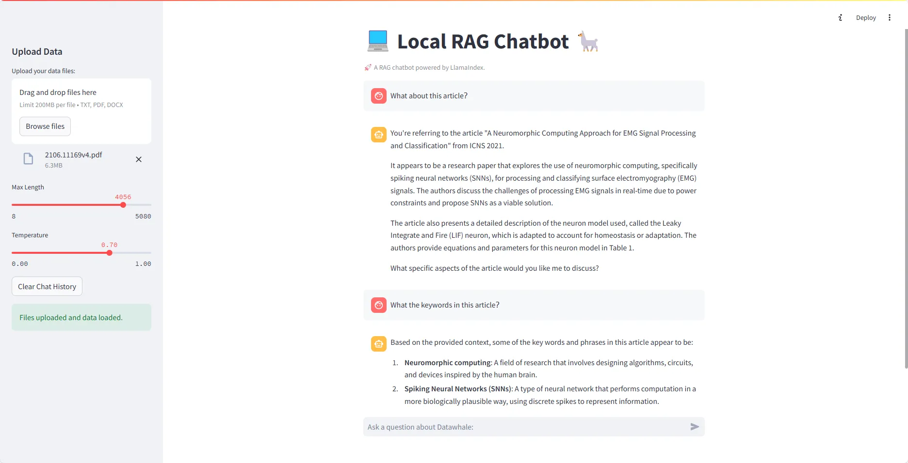
- 多文本问答
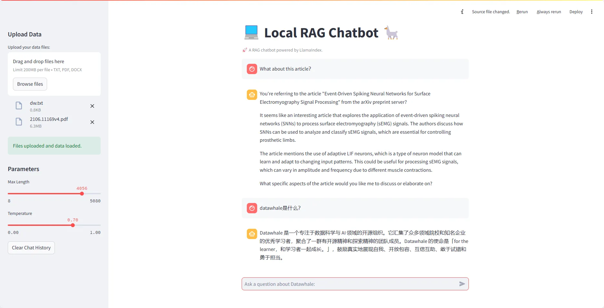
参考文献
7.4 使用 LangChain 实现本地 Agent
github的那个教程已经废了，老版本langchain应该可以运行，新版本运行不了了。
老版本的问题代码：
from langchain.pydantic_v1 import BaseModel, Field
from langchain.agents import AgentExecutor, create_react_agentAgentExecutor被移除了。create_react_agent变成 create_agent了。
7.4.1 安装包
!pip install -U langchain langchain-core langchain-community ollama langchain-ollama pydantic -i https://pypi.tuna.tsinghua.edu.cn/simple/7.4.2 代码
from pydantic import BaseModel, Field
from langchain_core.tools import tool
class SearchInput(BaseModel):
location: str = Field(description="location to search for")
@tool(args_schema=SearchInput)
def weather_forecast(location: str) -> str:
"""天气预报工具。"""
print(f"[TOOL] Weather for {location}")
return f"A dummy forecast for {location},it's Cloudy and rainy,the next day will be Storming"
@tool
def mood_guess(people: str) -> str:
"""天气预报工具。"""
print(f"[TOOL] Mood for {people}")
return f"A dummy guess for {people},happy and satisfied."
from langchain_ollama import ChatOllama
model = ChatOllama(
model="gpt-oss:20b-cloud",
temperature=0
)
from langchain.agents import create_agent
tools = [weather_forecast,mood_guess]
agent = create_agent(model, tools=tools)
result = agent.invoke(
{"messages": [{"role": "user", "content": "What's the weather in San Francisco? And how does Alice feel?"}]}
)
from langchain_core.messages import AIMessage
for msg in result["messages"]:
if isinstance(msg, AIMessage) and msg.content:
print(msg.content)输出
[TOOL] Weather for San Francisco
[TOOL] Mood for Alice
**San Francisco**
- **Today:** Cloudy with rain.
- **Tomorrow:** Expect a storm.
**Alice’s mood**
- She’s feeling happy and satisfied.7.4.3 问题
github上这教程比较老了，很多问题，首先没提供包安装，缺少这些上下文。问AI也经常出错，可能是因为langchain比较新，模型的资料少（最近他们应该准备更新了）。
这篇文档参考官方文档的案例：https://docs.langchain.com/oss/python/langchain/models#invoke
它实现了，极简的让模型调用工具。
7.5 使用 LlamaIndex 实现本地 Agent
7.5.1 简介
本文档介绍了如何使用 LlamaIndex 中的 ReActAgent 结合 Ollama 实现一个简单的本地 Agent。
本文档中使用的 LLM 为 gpt-oss:120b-cloud 模型，由于不同模型调用 tools 的能力不同，可以自行尝试使用不同的模型实现 Agent。
7.5.2 安装
! pip install -U llama-index llama-index-llms-ollama -i https://pypi.tuna.tsinghua.edu.cn/simple/7.5.3 导入依赖
from llama_index.core.tools import FunctionTool
from llama_index.core.agent import ReActAgent
from llama_index.llms.ollama import Ollama7.5.4 初始化 Agent 工具
# Define tools
def multiply(a: float, b: float) -> float:
print(f"[TOOL CALLED] multiply(a={a}, b={b})")
return a * b
multiply_tool = FunctionTool.from_defaults(fn=multiply)
# Create FunctionTool instances
multiply_tool = FunctionTool.from_defaults(
fn=multiply,
name="MultiplyTool",
description="A tool that multiplies two floats.",
return_direct=True
)7.5.5 初始化 LLM 和 Agent
# Initialize LLM
llm = Ollama(model="gpt-oss:120b-cloud", request_timeout=360.0)
# Initialize ReAct agent with tools
agent = ReActAgent(
tools=[multiply_tool],
llm=llm,
verbose=True,
# 可选参数
max_iterations=10, # 防止死循环
# react_chat_formatter=..., # 可以自定义 prompt 格式
)7.5.6 进行对话
直接使用 LLM 对话。
# direct response
res_llm = llm.complete("What is 2.3 × 4.8 ? Calculate step by step")
print(res_llm)输出结果：
Step‑by‑step multiplication of 2.3 × 4.8
1. Remove the decimals
Both numbers have one decimal place.
\[
2.3 = \frac{23}{10},\qquad 4.8 = \frac{48}{10}
\]
Multiplying the fractions:
\[
2.3 \times 4.8 = \frac{23}{10}\times\frac{48}{10}= \frac{23 \times 48}{100}
\]
So we just need the product **23 × 48**, then we’ll place the decimal point two places from the right (because we had 1 + 1 = 2 decimal places).
2. Multiply the whole numbers 23 × 48
Write it out as a standard column multiplication:
23
| × 48 |
|:-----|
| |
a. Multiply by the units digit (8):
\[ 23 \times 8 = 184 \]
Write 184 under the line:
23
× 48
-------
184 ← (23 × 8)
b. Multiply by the tens digit (4).\
Since the 4 is actually 40, we’ll later shift the result one place to the left (or simply add a zero at the end).
\[ 23 \times 4 = 92 \]
Write 92 with a trailing zero:
23
× 48
-------
184 ← (23 × 8)
920 ← (23 × 40)
c. Add the two partial products:
\[ 184 + 920 = 1104 \]
So,
\[ 23 \times 48 = 1104 \]
3. Restore the decimal places
We divided each original number by 10 (one decimal place each), i.e., we multiplied by (\frac{1}{10}\times\frac{1}{10}= \frac{1}{100}).
Therefore we place the decimal point two places from the right of 1104:
\[ 1104 ;\rightarrow; 11.04 \]
Result
\[ \boxed{2.3 \times 4.8 = 11.04} \]LLM 调用 Agent 对话。
handler = agent.run("What is 2.3 × 4.8 ? Calculate step by step")
result = await handler
print(result)输出结果：
[TOOL CALLED] multiply(a=2.3, b=4.8)
11.047.6 使用 gpt-oss:120b-cloud 和 Ollama 实现本地 RAG 应用
7.6.1 简介
本文档详细介绍如何利用 gpt-oss:120b-cloud（速度更快） 和 Ollama 构建本地化的 RAG（检索增强生成）应用。同时也是对 使用 LangChain 搭建本地 RAG 应用 的补充。
我们将通过实例演示完整的实现流程，包括文档处理、向量存储、模型调用等关键步骤。本教程选用 gpt-oss:120b-cloud 作为基础语言模型。考虑到不同模型具有各自的特点和性能表现，读者可以根据实际需求选择其他合适的模型来实现 RAG 系统。
7.6.2 前期准备
!pip install pdfplumber -i https://pypi.tuna.tsinghua.edu.cn/simple/
!pip install -U langchain-chroma chromadb -i https://pypi.tuna.tsinghua.edu.cn/simple/langchain 1.2.3
langchain-core 1.2.7
langchain-text-splitters 1.1.0
langchain-community 0.4.17.6.3 文档加载
加载 PDF 文档并将其切分为适当大小的文本块。
from langchain_community.document_loaders import PDFPlumberLoader
file = "DeepSeek_R1.pdf"
# Load the PDF
loader = PDFPlumberLoader(file)
docs = loader.load()
from langchain_text_splitters import RecursiveCharacterTextSplitter
text_splitter = RecursiveCharacterTextSplitter(chunk_size=500, chunk_overlap=0)
all_splits = text_splitter.split_documents(docs)7.6.4 初始化向量存储
使用 Chroma 数据库存储文档向量，并配置 Ollama 提供的嵌入模型。
from langchain_chroma import Chroma
from langchain_ollama import OllamaEmbeddings
local_embeddings = OllamaEmbeddings(model="nomic-embed-text")
vectorstore = Chroma.from_documents(documents=all_splits, embedding=local_embeddings)7.6.5 构建 Chain 表达式
设置模型和提示模板，构建处理链。
from langchain_core.output_parsers import StrOutputParser
from langchain_core.prompts import ChatPromptTemplate
from langchain_ollama import ChatOllama
model = ChatOllama(
model="gpt-oss:120b-cloud",
)
prompt = ChatPromptTemplate.from_template(
"Summarize the main themes in these retrieved docs: {docs}"
)
# 将传入的文档转换成字符串的形式
def format_docs(docs):
return "\n\n".join(doc.page_content for doc in docs)
chain = {"docs": format_docs} | prompt | model | StrOutputParser()
question = "What is the purpose of the DeepSeek project?"
docs = vectorstore.similarity_search(question)
chain.invoke(docs)输出
'**Main Themes**\n\n| Theme | What the text says | Why it matters |\n|------|--------------------|----------------|\n| **Performance gaps on engineering tasks** | DeepSeek‑R1 does **not** markedly beat its predecessor (DeepSeek‑V3) on software‑engineering benchmarks. | Shows that raw model scaling isn’t enough; targeted data‑handling tricks are needed. |\n| **Planned upgrades** | Future releases will use **rejection‑sampling on engineering data** and **asynchronous RL evaluations** to lift efficiency and quality. | Provides a concrete roadmap for closing the engineering‑task gap. |\n| **Robustness & bias mitigation** | The model avoids the **length‑bias** that plagues many GPT‑style evaluators, keeping performance stable across a variety of tasks. | Reinforces confidence that gains aren’t artefacts of test‑set quirks. |\n| **Strengths in reasoning‑heavy domains** | – **Math**: on par with OpenAI\u202fo1‑1217 and far ahead of other models.<br>– **Algorithmic coding** (LiveCodeBench, Codeforces): reasoning‑focused models dominate.<br>– **Engineering‑oriented coding**: OpenAI\u202fo1‑1217 still outperforms DeepSeek‑R1. | Highlights that the model’s **reasoning pipeline** works well, but domain‑specific engineering knowledge still lags. |\n| **RL‑only reasoning incentive** | This work is the **first open study** proving that large‑language‑model reasoning can be boosted **purely through reinforcement learning**, without any supervised‑fine‑tuning (SFT) “seed.” | Breaks the conventional belief that SFT is a prerequisite for reasoning improvements. |\n| **Multi‑stage training pipeline** | 1. **Cold‑start collection** → fine‑tune DeepSeek‑V3‑Base.<br>2. **Reasoning‑oriented RL** (DeepSeek‑R1‑Zero).<br>3. Near‑convergence → generate new SFT data via **rejection sampling** from the RL checkpoint.<br>4. Merge with existing supervised data (writing, factual QA, self‑cognition) and **re‑train** the base model. | Shows a **systematic loop**: supervised seed → RL‑driven reasoning discovery → fresh supervised data → retraining, enabling continual improvement. |\n| **Human‑preference alignment** | Two RL stages are dedicated to **discovering better reasoning patterns** and **aligning outputs with human preferences**. | Makes the model not only stronger analytically but also more useful and safe for real users. |\n\n**Take‑away Summary**\n\nThe documents revolve around **evaluating and improving DeepSeek‑R1**:\n\n1. **Current limits** on software‑engineering tasks are acknowledged, prompting plans for data‑centric fixes (rejection sampling, async RL). \n2. The model shows **strong, bias‑free reasoning** on math and algorithmic coding, rivaling top OpenAI systems, but still trails on engineering‑specific code. \n3. A **novel RL‑only incentive** demonstrates that reasoning can be boosted without prior SFT, a first in open research. \n4. The **training pipeline** intertwines cold‑start supervised fine‑tuning, reasoning‑focused RL, and a feedback loop that creates fresh supervised data from RL checkpoints, eventually aligning the model with human preferences.\n\nOverall, the themes illustrate a **balanced picture of progress and challenges**: solid reasoning gains via RL, robust evaluation practices, and a clear roadmap to lift engineering‑task performance through targeted data‑recycling strategies.'7.6.6 带有检索的 QA
整合检索和问答功能。
from langchain_core.runnables import RunnablePassthrough
RAG_TEMPLATE = """
You are an assistant for question-answering tasks. Use the following pieces of retrieved context to answer the question. If you don't know the answer, just say that you don't know. Use three sentences maximum and keep the answer concise.
<context>
{context}
</context>
Answer the following question:
{question}"""
rag_prompt = ChatPromptTemplate.from_template(RAG_TEMPLATE)
retriever = vectorstore.as_retriever()
qa_chain = (
{"context": retriever | format_docs, "question": RunnablePassthrough()}
| rag_prompt
| model
| StrOutputParser()
)
question = "What is the purpose of the DeepSeek project?"
# Run
qa_chain.invoke(question)输出
'The DeepSeek project aims to build large‑language models with stronger reasoning abilities by using a multi‑stage training pipeline that combines supervised fine‑tuning and reinforcement‑learning to incentivize reasoning without heavy SFT. It seeks to improve performance across diverse tasks—math, coding, software‑engineering, and factual QA—by iteratively refining the model with cold‑start data, RL‑driven reasoning, and rejection‑sampled SFT. This approach enables more robust, bias‑free evaluations and higher benchmark scores.'7.6.7 总结
本教程详细介绍了如何使用 DeepSeek R1 和 Ollama 构建本地化的 RAG 应用系统。我们通过四个主要步骤实现了完整的功能：
- 文档处理：使用 PDFPlumberLoader 加载 PDF 文档，并通过 RecursiveCharacterTextSplitter 将文本切分成适当大小的块。
- 向量存储：利用 Chroma 数据库和 Ollama 的嵌入模型建立向量存储系统，为后续的相似度检索提供基础。
- Chain 构建：设计并实现处理链，将文档处理、提示模板和模型响应整合成流程化的处理过程。
- RAG 实现：通过整合检索和问答功能，实现了完整的检索增强生成系统，能够基于文档内容回答用户问询。
通过本教程，可以快速搭建起自己的本地 RAG 系统，并根据实际需求进行定制化改进。建议在实践中多尝试不同的模型和参数配置，以获得最佳的使用效果。
注: 使用 streamlit 或 FastAPI 等工具，可以将本地 RAG 应用部署为 Web 服务，实现更广泛的应用场景。
仓库中也提供了
app.py文件，可以直接运行该文件，启动 Web 服务。 参考文档 Build a RAG System with DeepSeek R1 & Ollama。
注意：运行该代码前，要提前运行 Ollama 服务。
对话页面如下：
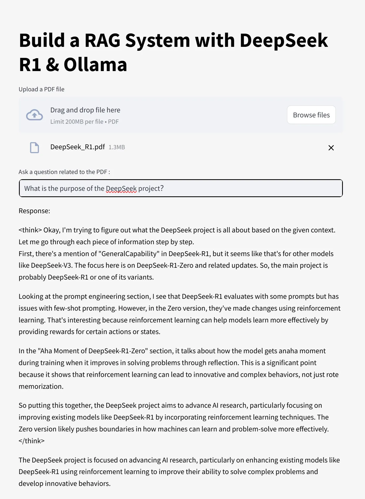
7.7 在本地使用obsidian做RAG
7.7.1 下载obsidian
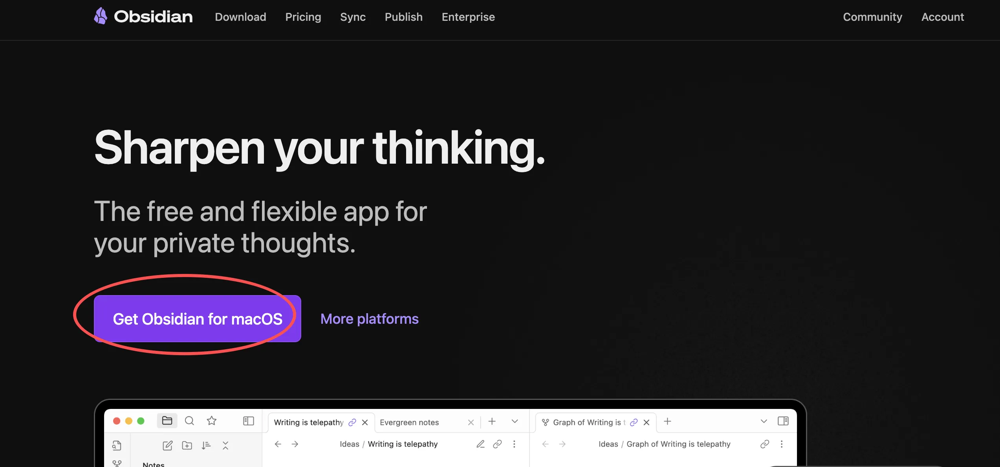
点击红圈部分直接下载obsidian，obsidian-1.11.4.dmg。
7.7.2 打开
界面类似这样
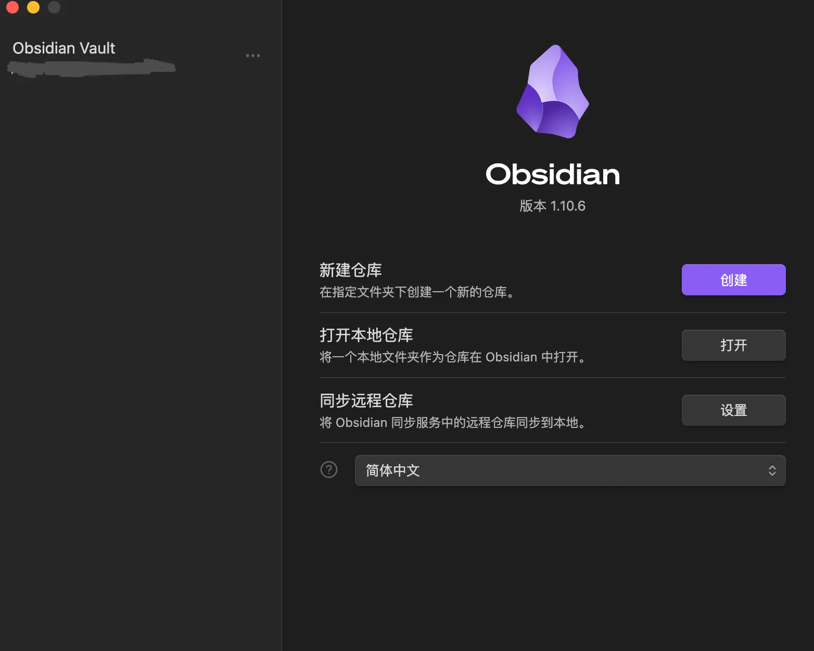
创建新仓库。
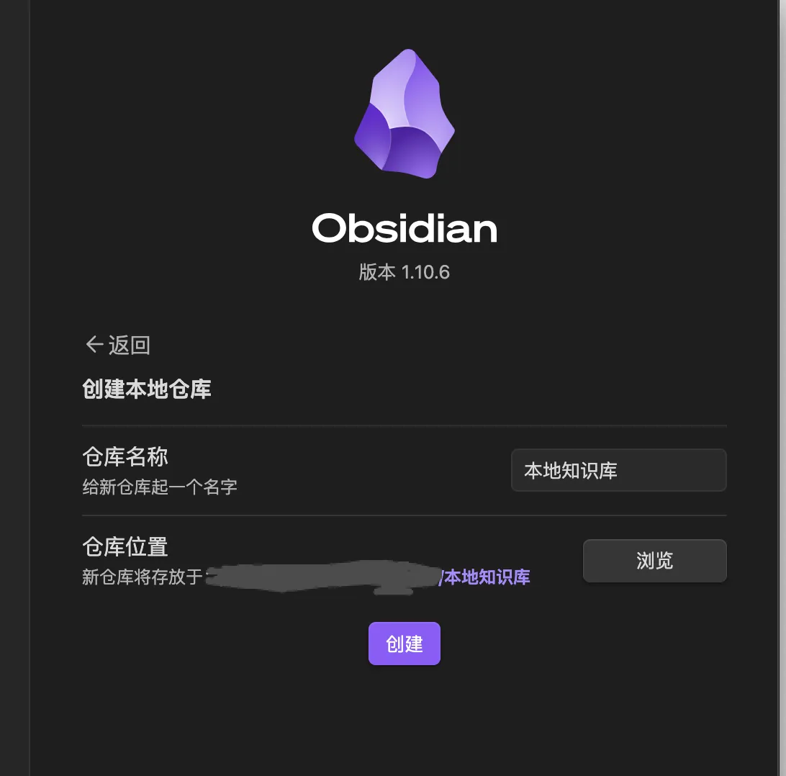
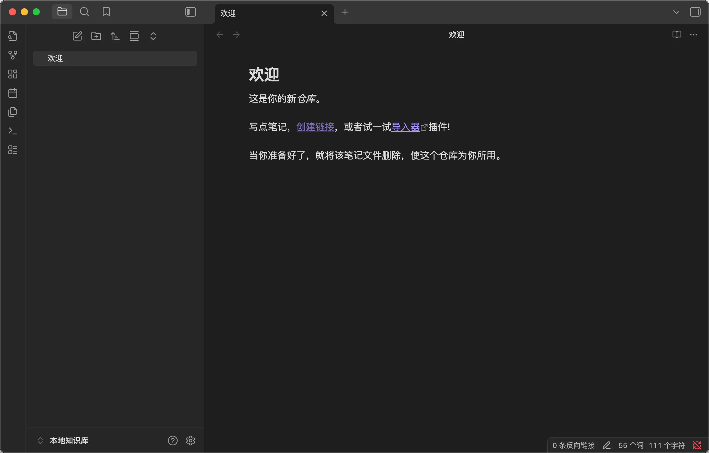
7.7.3 创建个虚拟环境
用conda create -n handllm python=3.11，或者用python -m venv handllm推荐用conda。
激活环境conda activate handllm，或source handllm/bin/activate
7.7.3.1 安装包
pip install llama-index-llms-ollama
pip install llama-index-embeddings-ollama
pip install -U llama-index-readers-file
pip install llama-index-embeddings-dashscope
pip install llama-index-llms-openai-like7.7.4 导入所有包
from llama_index.embeddings.dashscope import DashScopeEmbedding,DashScopeTextEmbeddingModels
from llama_index.core import SimpleDirectoryReader,VectorStoreIndex
from llama_index.llms.openai_like import OpenAILike
from llama_index.core import Settings
from pathlib import Path
import getpass
import json
import os7.7.5 查看有多少.md文件
from pathlib import Path
vault_path = Path("/path_to_local_knowledge")
md_files = list(vault_path.rglob("*.md"))
print(len(md_files))
print(vault_path)obsidian里的文件路径可以从如下图片得到：
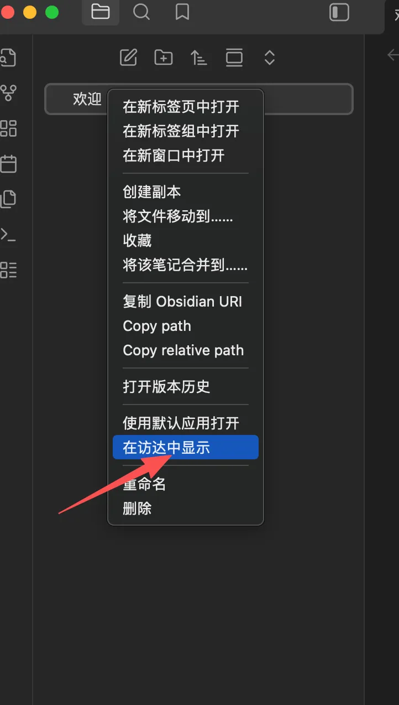
再把文件拖到终端，就可以知道路径。
7.7.6 输入api_key
DASHSCOPE_API_KEY = getpass.getpass("未找到存放Key的文件，请输入你的api_key:").strip()
Key = {
"DASHSCOPE_API_KEY": DASHSCOPE_API_KEY
}
# 指定文件名
file_name = './Key.json'
with open(file_name, 'w') as json_file:
# dump把python对象转成json字符串
json.dump(Key, json_file, indent=4)
os.environ['DASHSCOPE_API_KEY'] = Key["DASHSCOPE_API_KEY"]本地模型太慢了，使用bge-m3:latest进行向量化，跑了一个多小时才跑完。
本文档用阿里的百炼平台的模型，需要api_key。如果本地电脑性能好，可以直接下载ollama里面更大的embedding模型。
使用ollama本地模型的完整代码放最后作为参考。
7.7.7 保存索引
from llama_index.embeddings.dashscope import DashScopeEmbedding,DashScopeTextEmbeddingModels
from llama_index.core import SimpleDirectoryReader,VectorStoreIndex
from llama_index.llms.openai_like import OpenAILike
from llama_index.core import Settings
documents = SimpleDirectoryReader(
input_dir=vault_path,
recursive=True,
required_exts=[".md"]
).load_data()Settings.llm = OpenAILike(
model="qwen-plus",
api_base="https://dashscope.aliyuncs.com/compatible-mode/v1",
api_key=os.getenv("DASHSCOPE_API_KEY"),
is_chat_model=True
)
Settings.embed_model = DashScopeEmbedding(
model_name=DashScopeTextEmbeddingModels.TEXT_EMBEDDING_V2
)
from llama_index.core import VectorStoreIndex
index = VectorStoreIndex.from_documents(documents)
index.storage_context.persist(persist_dir="./storage_ali")7.7.8 读取索引
先构造一个提示词，让模型根据召回信息回答的时候，尽量不偏移。
from llama_index.core import PromptTemplate
QA_PROMPT_TMPL = (
"Context information is below.\n"
"---------------------\n"
"{context_str}\n"
"---------------------\n"
"请仅根据上述提供的上下文信息回答问题。限制如下：\n"
"1. 你的回答必须完全基于提供的上下文，不得使用你已有的外部知识。\n"
"2. 如果上下文中没有关于该问题的答案，请直接回答：'抱歉，在您的笔记库中没有找到相关描述。'\n"
"3. 保持回答简洁专业。\n\n"
"Query: {query_str}\n"
"Answer: "
)
qa_prompt = PromptTemplate(QA_PROMPT_TMPL)# 将本地索引文件加载为索引
from llama_index.core import StorageContext,load_index_from_storage
storage_context = StorageContext.from_defaults(persist_dir="./storage_ali")
index = load_index_from_storage(storage_context,embed_model=DashScopeEmbedding(
model_name=DashScopeTextEmbeddingModels.TEXT_EMBEDDING_V2
))
print("成功从./storage_ali路径加载索引")7.7.9 问答
query_engine = index.as_query_engine(
similarity_top_k=5,
streaming=True,
text_qa_template=qa_prompt # 关键点：绑定提示词
)
# 3. 执行查询
response = query_engine.query("今天星期几了？")
response.print_response_stream()输出
抱歉，在您的笔记库中没有找到相关描述。继续问
response = query_engine.query("读者为什么看网文？")
response.print_response_stream()输出
读者读网文是为了通过“压抑 → 反转 → 补偿”的循环，过度补偿现实生活中无法满足的情绪缺口。网文提供现实中得不到的东西，如力量感、被看见、公平、被爱、价值感和方向感等，并通过镜像机制让读者在主角身上看到自己，经历委屈后实现反转与补偿，从而获得情绪上的满足和多巴胺奖赏。这种循环可不断延续，使读者持续获得心理代偿。使用平台的大模型有时候会出现报错：
APIError: Output data may contain inappropriate content. For details, see: https://help.aliyun.com/zh/model-studio/error-code#inappropriate-content大致原因是：
generally indicates that a content moderation or safety filter, usually implemented by the service provider (like OpenAI, Microsoft Azure, or other platforms), has flagged the generated output as violating its usage policies. 7.7.10 使用本地模型
from pathlib import Path
vault_path = Path("/path_to_local_knowledge")
from llama_index.core import SimpleDirectoryReader
documents = SimpleDirectoryReader(
input_dir=vault_path,
recursive=True,
required_exts=[".md"]
).load_data()
from llama_index.llms.ollama import Ollama
from llama_index.embeddings.ollama import OllamaEmbedding
from llama_index.core import Settings
Settings.llm = Ollama(
# ollama的云模型，本地模型跑不动
model="gpt-oss:120b-cloud",
temperature=0
)
Settings.embed_model = OllamaEmbedding(
model_name="bge-m3:latest",
)
from llama_index.core import VectorStoreIndex
index = VectorStoreIndex.from_documents(documents)
index.storage_context.persist(persist_dir="./storage")from llama_index.llms.ollama import Ollama
from llama_index.embeddings.ollama import OllamaEmbedding
# 将本地索引文件加载为索引
from llama_index.core import StorageContext,load_index_from_storage
storage_context = StorageContext.from_defaults(persist_dir="./storage")
index = load_index_from_storage(storage_context)
print("成功从./storage路径加载索引")
from llama_index.core import PromptTemplate
QA_PROMPT_TMPL = (
"Context information is below.\n"
"---------------------\n"
"{context_str}\n"
"---------------------\n"
"请仅根据上述提供的上下文信息回答问题。限制如下：\n"
"1. 你的回答必须完全基于提供的上下文，不得使用你已有的外部知识。\n"
"2. 如果上下文中没有关于该问题的答案，请直接回答：'抱歉，在您的笔记库中没有找到相关描述。'\n"
"3. 保持回答简洁专业。\n\n"
"Query: {query_str}\n"
"Answer: "
)
qa_prompt = PromptTemplate(QA_PROMPT_TMPL)
# 2. 在创建查询引擎时，通过 text_qa_template 传入自定义提示词
query_engine = index.as_query_engine(
similarity_top_k=5,
streaming=True,
text_qa_template=qa_prompt # 关键点：绑定提示词
)
# 3. 执行查询
response = query_engine.query("读者为什么看网文？")
response.print_response_stream()7.8 在Cherry Studio使用ollama
7.8.1 下载
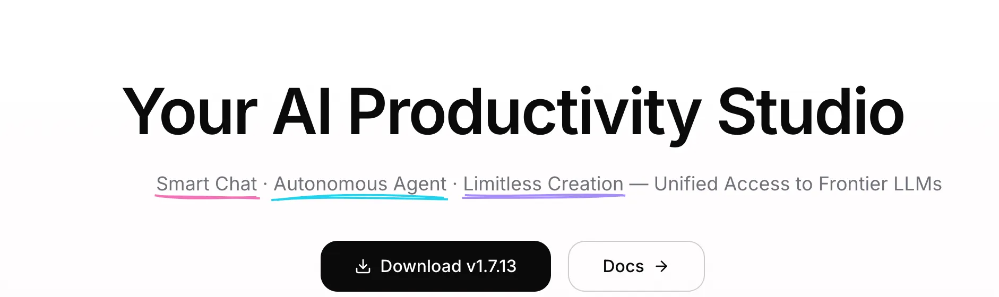
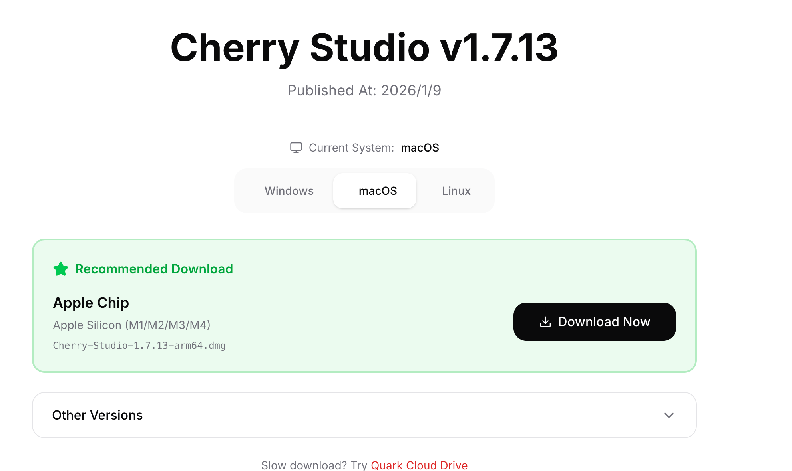
之后打开就好，点击继续。
7.8.2 导入ollama
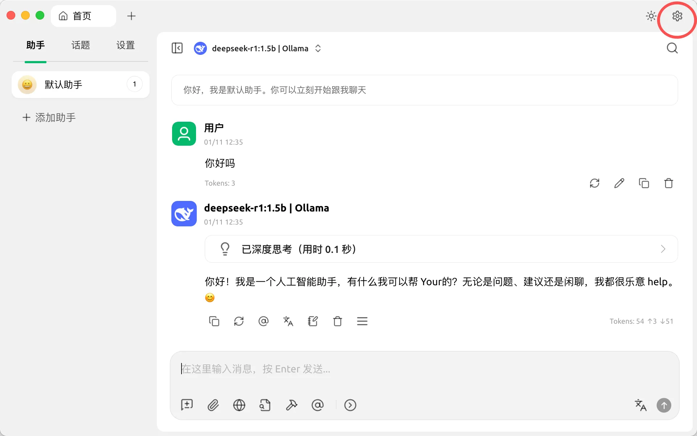
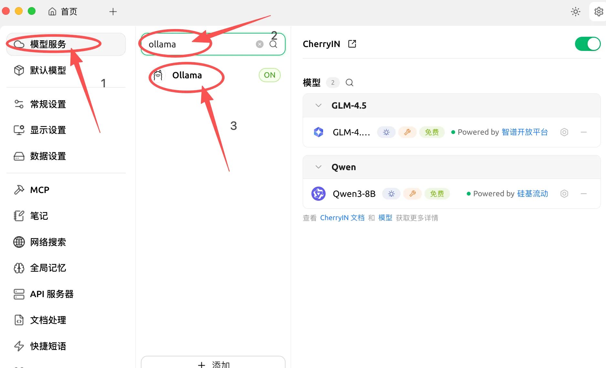
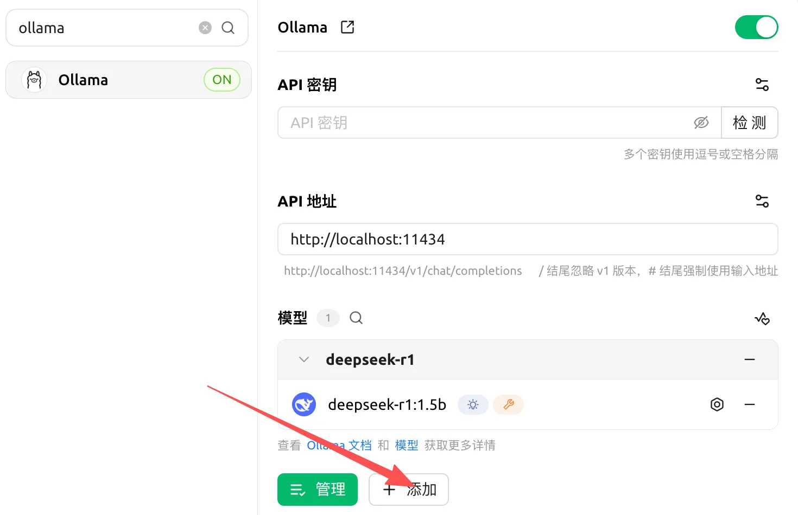
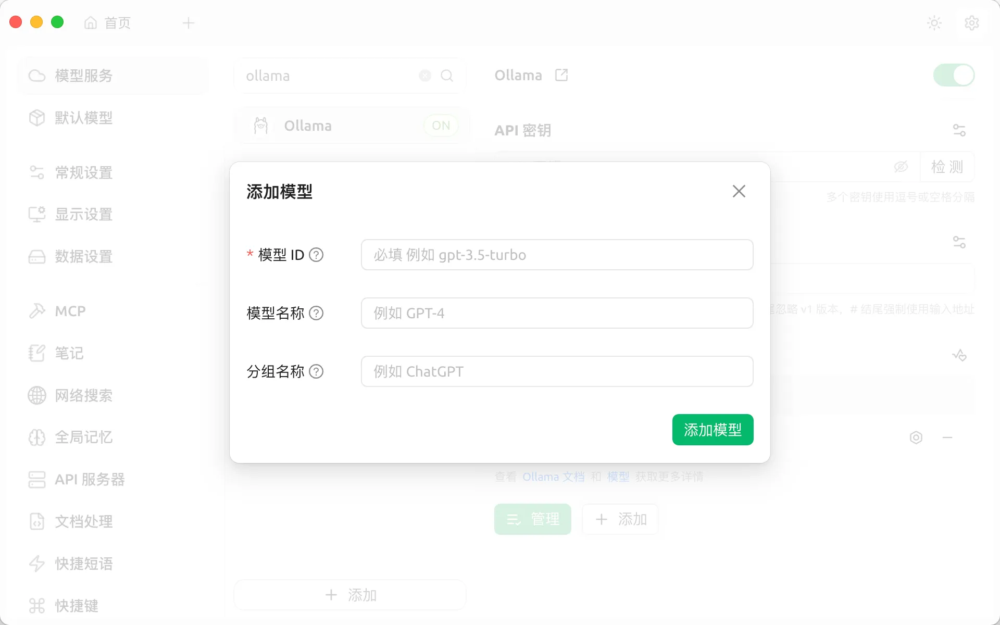
在终端输入ollama list
~ % ollama list
NAME ID SIZE MODIFIED
deepseek-r1:1.5b e0979632db5a 1.1 GB 47 hours ago
qwen2.5-coder:7b dae161e27b0e 4.7 GB 2 days ago
nomic-embed-text:latest 0a109f422b47 274 MB 2 days ago
qwen3-coder:480b-cloud e30e45586389 - 2 days ago
deepseek-v3.1:671b-cloud d3749919e45f - 2 days ago
gpt-oss:20b-cloud 875e8e3a629a - 2 days ago
gpt-oss:120b-cloud 569662207105 - 2 days ago 以gpt-oss:120b-cloud为例
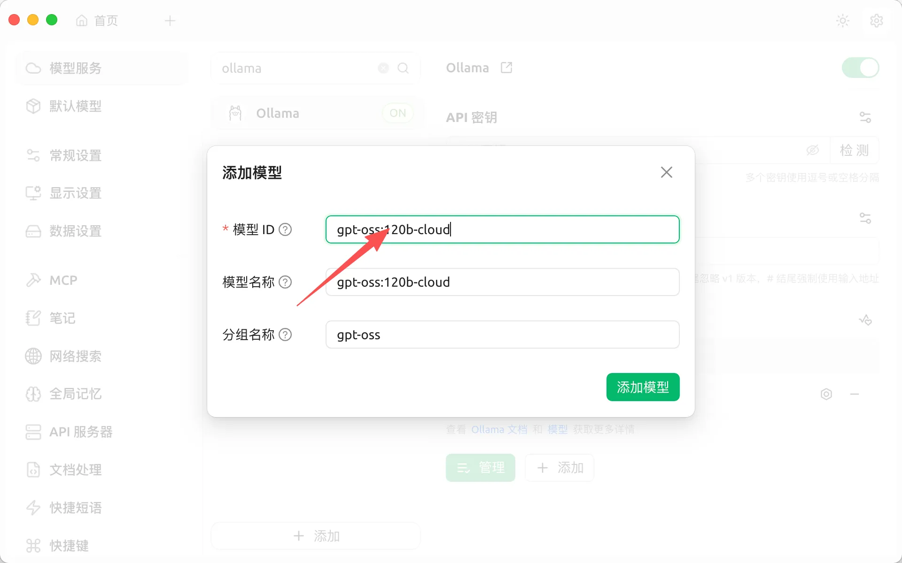
只需要填模型ID，其余的空会自动填写。
添加模型后，回到首页。
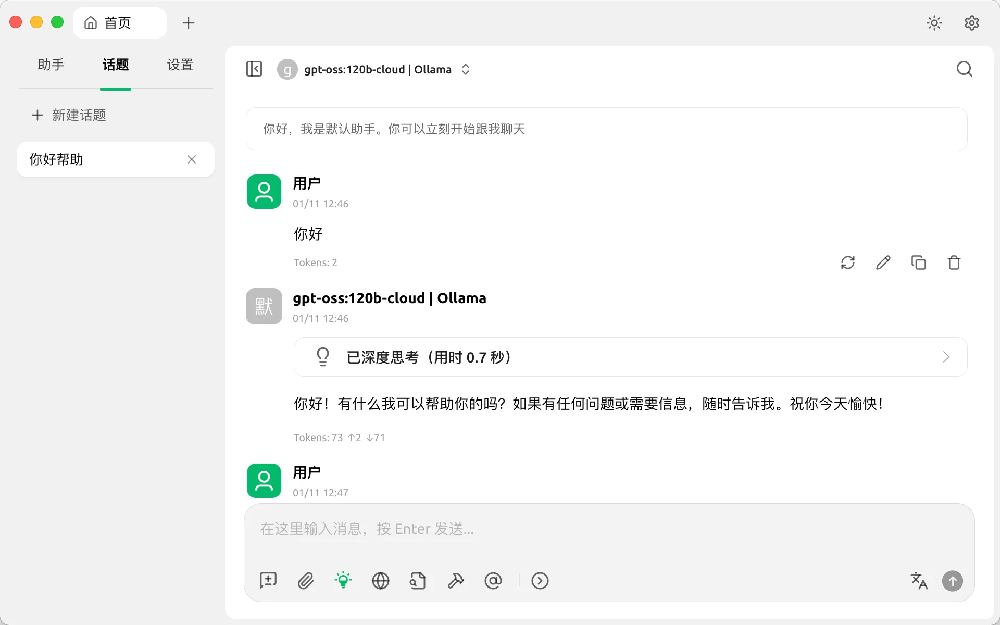